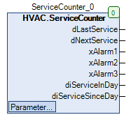

ServiceCounter (FB)¶
FUNCTION_BLOCK ServiceCounter
Short Description¶
Maintenance signalling
Portrayal¶

Interfaces¶
Inputs¶
Output¶
Name Datatyp
Range
Initial value
Function
dLastService DATE Date of last maintenance
dNextService DATE Date of next maintenance due date
xAlarm1 BOOL Indication that maintenance is due soon
xAlarm2 BOOL Indication that maintenance is due today
xAlarm3 BOOL Indication that maintenance was already due
diServiceInDay DINT Indication in how many days the next maintenance is due
diServiceSinceDay DINT Days since last maintenance
Setpoints / Parameter¶
Name Datatyp
Range
Initial value
Function
iAlarm1 INT (0-diServiceInterval)...0 -10 Alarm limit 1 in days (maintenance is due soon)
iAlarm3 INT 0...diServiceInterval 10 Alarm limit 3 in days (maintenance was already due)
diServiceInterval UINT 1...1825 365 Maintenance interval (in days)
xReset BOOL FALSE Resetting the maintenance day counter
xEn BOOL TRUE Enabling of the outputs xAlarm1 to 3
Functional Description¶
General¶
Outputs xAlarm1, xAlarm2 and xAlarm3¶
Set points / parameters iAlarm1, iAlarm3 and diServiceInterval¶
Setpoint / Paremeter
minimum value
maximum value
Note
diServiceInterval 0 5 * diServiceInterval service interval
iAlarm1 (0-diServiceInterval) 0 Threshold value for output xAlarm1
iAlarm2 iAlarm1 iAlarm3 Threshold value for output xAlarm2
iAlarm3 iAlarm2 diServiceInterval Threshold value for output xAlarm3
The setpoint / parameter iAlarm2 cannot be changed by the user.The setpoints / parameters are checked cyclically and, if necessary, limited to the corresponding limit values.Each change of a setpoint / parameter can therefore cause a change of another setpoint / parameter.
Prerequisite for Using the ServiceCounter function block
Visualization¶
Codesys¶
- InOut:
Scope Name Type Initial Comment Input xEn BOOL TRUE Enabling of the outputs xAlarm1 to 3
xReset BOOL FALSE Resetting the maintenance day counter
diServiceInterval UINT 365 Maintenance interval (in days)
iAlarm3 INT 10 Alarm limit 3 in days (maintenance was already due)
iAlarm1 INT -10 Alarm limit 1 in days (maintenance is due soon)
Output dLastService DATE Date of last maintenance
dNextService DATE Date of next maintenance due date
xAlarm1 BOOL Indication that maintenance is due soon
xAlarm2 BOOL Indication that maintenance is due today
xAlarm3 BOOL Indication that maintenance was already due
diServiceInDay DINT Indication in how many days the next maintenance is due
diServiceSinceDay DINT Days since last maintenance